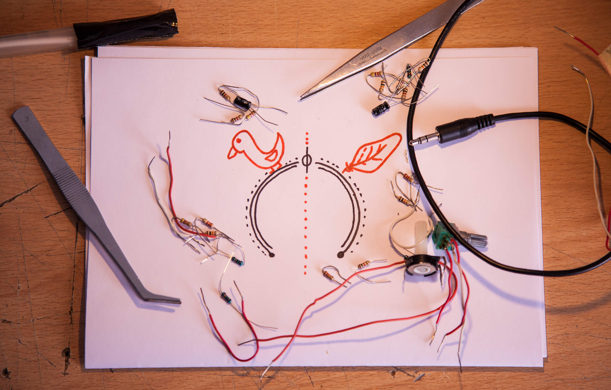
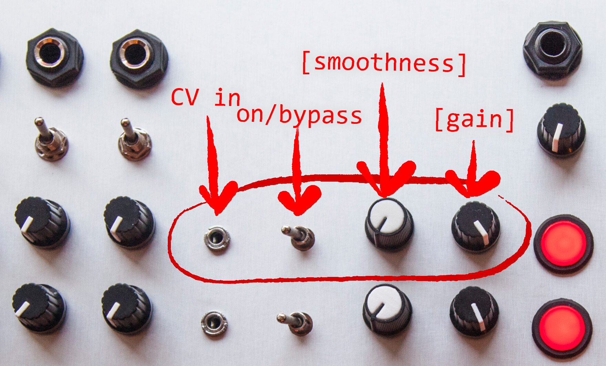
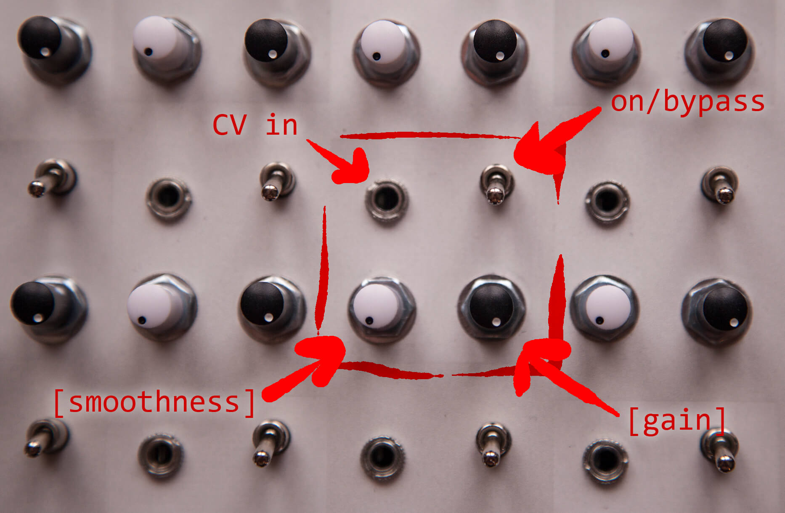
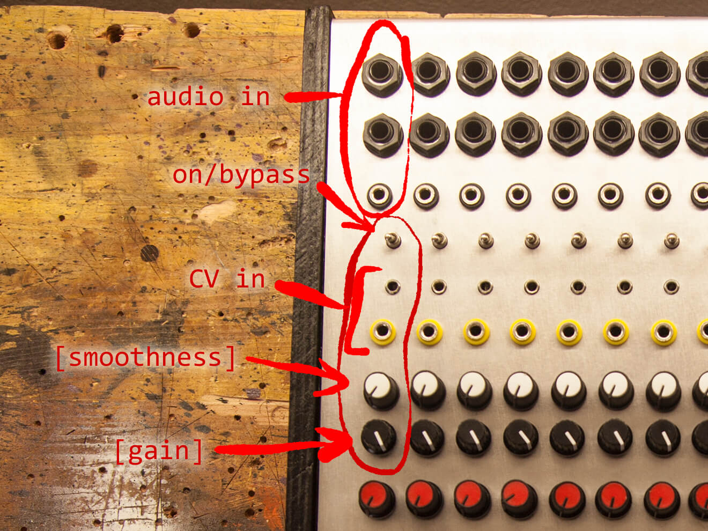

Pluck'n'Duck VCA
Versatile Voltage Controlled Amplifier with built-in envelope follower, input CV gain control and threshold inverter
Applications
>>> See gallery for application examples
The Pluck'n'Duck VCA can be installed on inputs, outputs, or on matrix mixer nodes, effectively forming a VCA Matrix
Might also be available in Eurorack format upon request.
Basic Functioning
The Pluck'n'Duck is a VCA that accepts any type of signal as control voltage, ranging from line audio to 20v gates , with a built-it envelope follower and a true-inverting gain stage.
Here you can find a quick video explaining how it works
You can use both CVs and audio signals as input CVs, the VCA will work with a wide range of signals as control voltages, from 20v gates from old equipment, 10 or 5 Vpp from eurorack, to line level audio, down to very faint line level audio.
The circuit is vactrol-based, giving it a very soft and musical response, while NOT being an lpg (low-pass gate), thus only affecting the amplitude of the controlled sound.
Controls and operation
Each P'n'D VCA has two main controls, [gain] and [smoothness]
P'n'D on an output row
P'n'D in a VCA Matrix
P'n'D on an input
Gain
It's a combined [gain]+[attenuverter] knob, you can attenuate or amplify the incoming CV signal up to 21x (+27dB)
- from 12 o'clock up it operates as a normal VCA, "Pluck"; the higher the CV, the louder the sound
- from 12 o'clock down you have inverted response, a "Ducking" effect; the higher the CV, the quieter the sound, it will act as a side-chained compressor
- of course you can still use the [smoothness] control in "Duck" mode, for all sorts of interesting effects
Smoothness
With the this control you can adjust the release of the envelope follower, with a little bit of influence on the attack as well (with a 1/24 ratio)
You can use it to take in an audio signal, smooth it out and use it as a Control Voltage, or to smooth out transients of actual CVs
- fully counterclockwise, the signal will be unaffected
- fully clockwise, it will add a ~2seconds smooth attack
- use the switch to select whether the VCA is active or bypassed (true bypass)